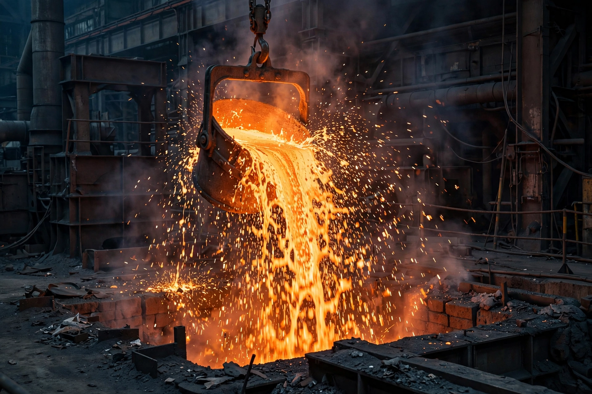

Metallurgy
From Wikipedia, the free encyclopedia

Metallurgy is the domain of materials science and engineering concerned with the production, purification, alloying, structure and properties of Metals. It spans extractive metallurgy (winning metals from ores — smelting, electrolysis, refining), physical metallurgy (phase diagrams, heat treatment, microstructure) and process metallurgy (casting, forging, powder routes). Metallurgy underwrote the Bronze and Iron Ages and remains the backbone of industrial civilisation — the world produces some 1.9 billion tonnes of steel a year.
History
Native copper and gold were worked by 9000 BC; smelting (c. 5000 BC), bronze alloying, iron (and the carbon alchemy of steel) and precious-metal cupellation built the ancient metals ladder. The scientific era began with Sorby's microscopy of steel (1860s), phase-rule diagrams, and Bessemer's converter (1856) making steel cheap; twentieth-century metallurgy added stainless steels, aluminium alloys, superalloys for jet turbines and the physics of dislocations explaining why metals bend.
Modern metallurgy
Today's frontiers include high-entropy alloys, additive manufacturing of metals, hydrogen-based green steelmaking (replacing coking coal), and urban mining of e-waste — while physical metallurgy merges into computational materials design, with CALPHAD thermodynamics and machine-learned interatomic potentials predicting alloys before they are melted.